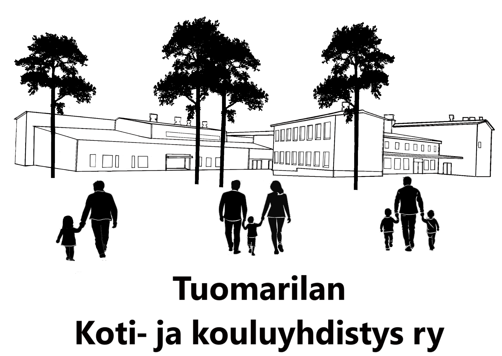
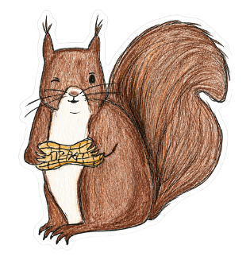
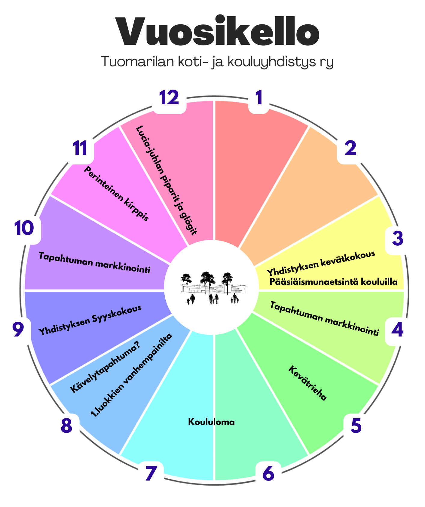
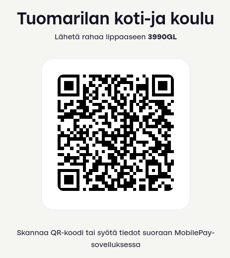

Tuomarilan Koti- ja kouluyhdistys ry on espoolaisen Tuomarilan koulun vanhempainyhdistys.
Yhdistyksen tavoitteena on toimia lasten hyväksi sekä edistää kodin ja koulun välistä yhteistyötä. Tavoitteenamme on myös olla mukana lisäämässä yhteisöllisyyttä Tuomarilaan ja lähiseuduille.
Koti- ja kouluyhdistys muun muassa..

✏️ Yhdistyksen kokous (aika sovitaan pian) Tuomarilan koulun opettajien huoneessa. Tervetuloa rohkeasti mukaan toimintaan!
📣 Seuraa ajankohtaista tiedotusta yhdistyksen Facebook-ryhmässä
Myös Tuomarila-seuran tiedotusta kannattaa pitää silmällä niin tietää mitä kotiseudullamme tapahtuu!

Jos olet Tuomarilan koulun oppilaan vanhempi, tuet yhdistystä parhaiten tulemalla mukaan aktiivitoimintaan! Seuraa ajankohtaisten tapahtumien tiedotusta ja tule rohkeasti juttelemaan :)
Vapaaehtoinen kannatusmaksu 20 euroa per lukuvuosi
Skannaa allaoleva MobilePay-koodi tai klikkaa linkki auki tästä

Maksun voi maksaa myös tilisiirtona:
(OP) FI60 5789 8520 0180 51
Saaja: Tuomarilan Koti- ja Kouluyhdistys ry
Tuomarilan koti- ja kouluyhdistys r.y.
Y-tunnus 1500717-6
Ota yhteyttä hallitukseen tuomarilanvanhemmat (ät) gmail.com tai Sipi (puheenjohtaja) 050 308 6084